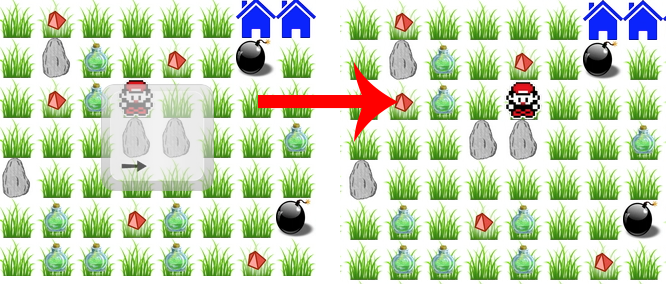
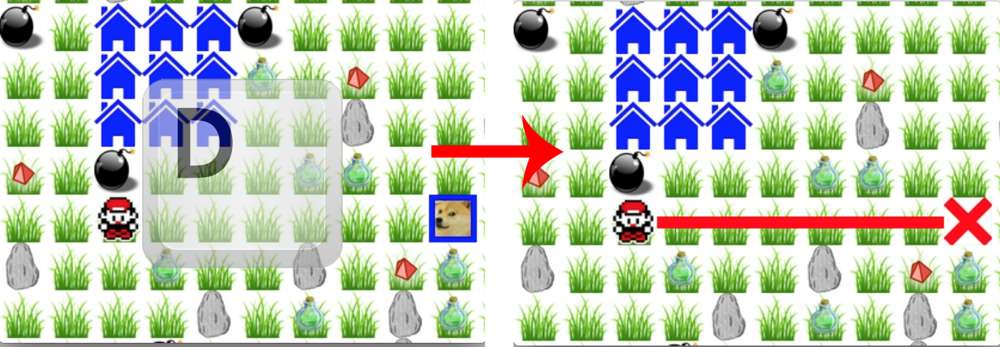

It's vintage Red vs. Blue! Infiltrate and destroy the other team's base to win.
Use the arrow keys to move about the map.
Equip your laser with 2, and fire it using the W, A, S, or D key. Collect ammo () strewn about the map to recharge your laser.

Wondering what the deal is with all of the rocks? So were we! Press 1 to select the pickup action. Then, when next to a rock, use the W, A, S, or D key to pickup a rock above, left, below, or right of you respectively.
Press the SPACE key to set the rock down at your current location. Arranging these blocks into specific formations allows you to build new structures on the map. See the video below for a tutorial on building lava (the only structure currently implemented).
Press 3 to equip landmines, and SPACE to set one down. Press SPACE again to denotate this mine. Use landmines to destroy the enemy base or attack other players!